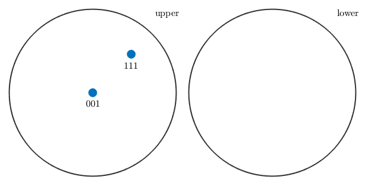

This section describes the class vector3d and gives an overview how to deal with specimen directions in MTEX.
Contents
Class Description
Specimen directions are three-dimensional vectors in the Euclidean space represented by coordinates with respect to an outer specimen coordinate system x, y, z. In MTEX Specimen directions are represented by variables of the class vector3d.
SUB: Defining Specimen Directions
The standard way to define a specimen directions is by its coordinates.
v = vector3d(1,1,0);
This gives a single vector with coordinates (1,1,0) with respect to the x, y , z coordinate system. A second way to define a specimen directions is by its spherical coordinates, i.e. by its polar angle and its azimuth angle. This is done by the option polar.
polar_angle = 60*degree;
azimuth_angle = 45*degree;
v = vector3d('polar',polar_angle,azimuth_angle);
Finally, one can also define a vector as a linear combination of the predefined vectors xvector, yvector, and zvector
v = xvector + 2*yvector;
SUB: Calculating with Specimen Directions
As we have seen in the last example. One can calculate with specimen directions as with ordinary number. Moreover, all basic vector operation as "+", "-", "*", inner product, cross product are implemented.
u = dot(v,xvector) * yvector + 2 * cross(v,zvector);
Using the brackets v = [v1,v2] two specimen directions can be concatened. Now each single vector is accesable via v(1) and v(2).
w = [v,u]; w(1) w(2)
ans = vector3d size: 1 x 1 x y z 1 2 0 ans = vector3d size: 1 x 1 x y z 4 -1 0
When calculating with concatenated specimen directions all operations are performed componentwise for each specimen direction.
w = w + v;
Besides the standard linear algebra operations, there are also the following functions available in MTEX.
[[vector3d.angle.html,angle(v1,v2)]] % angle between two specimen directions [[vector3d.dot.html,dot(v1,v2)]] % inner product [[vector3d.cross.html,cross(v1,v2)]] % cross product [[vector3d.norm.html,norm(v)]] % length of the specimen directions [[vector3d.sum.html,sum(v)]] % sum over all specimen directions in v [[vector3d.mean.html,mean(v)]] % mean over all specimen directions in v [[vector3d.polar.html,polar(v)]] % conversion to spherical coordinates
% A simple example for applying the norm function is to normalize a set of % specimen directions w = w ./ norm(w)
w = vector3d
size: 1 x 2
x y z
0.447214 0.894427 0
0.980581 0.196116 0
SUB: Plotting three dimensionl vectors
The [[vector3d.plot.html,plot]] function allows you to visualize an arbitrary number of specimen directions in a spherical projection
plot([zvector,xvector+yvector+zvector],'labeled')

random vectors
equispaced grids
regular grids
alginment of the plot
Complete Function list
| abs | length of vector |
| accumarray | for vector3d |
| angle | between two vectors |
| angle_outer | angle between two vectors |
| arrow3d | plot three dimensional arrows |
| byPolar | define vector3d by polar angles |
| calcDelaunay | compute the Delaynay triangulation for a spherical grid |
| calcDensity | calculate a density function out of (weighted) unit vectors |
| calcQuadratureWeights | compute the area of the Voronoi decomposition |
| calcVoronoi | compute the area of the Voronoi decomposition |
| calcVoronoiArea | compute the spherical area of the Voronoi decomposition |
| cat | implement cat for vector3d |
| centroid | compute the centroid of a 2d polygon in 3d |
| char | convert to char |
| circle | annotated a circle |
| contour | spherical contour plot |
| contourf | spherical filled contour plot |
| cross | pointwise cross product of two vector3d |
| cross_outer | pointwise cross product of two vector3d |
| ctranspose | transpose vector |
| det | pointwise determinant or triple product of three vector3d |
| display | standard output |
| dot | pointwise inner product |
| dot_outer | outer dot product |
| double | converts vector3d to double |
| dyad | ic tensor product |
| eig | envalues and eigenvectors for a list of @vector3d |
| end | overloaded end function |
| eq | ? v1 == v2 |
| exp | rotation vector to rotation |
| export | quaternions to a ascii file |
| find | return index of all points in a epsilon neighborhood of a vector |
| horzcat | overloads [v1,v2,v3..] |
| interp | spherical interpolation including some smoothing |
| isPerp | check whether v1 and v2 are orthogonal |
| isempty | overloads isempty |
| length | overloads length |
| line | Syntax |
| load | import directions |
| mean | computes the mean vector |
| minus | overload minus |
| mpower | nth dyadic product |
| mrdivide | scalar division v / s |
| mtimes | scalar multiplication |
| ne | ? v1 == v2 |
| norm | vector norm |
| normalize | a vector |
| orth | an arbitrary orthogonal vector |
| pcolor | spherical contour plot |
| perp | conmpute an vector best orthogonal to a list of directions |
| planeIntersect | pointwise determinant or triple product of three vector3d |
| plot | vectors as two dimensional projections on the sphere |
| plot3d | plot spherical data |
| plotCustom | Syntax |
| plus | poitwise addition |
| polar | cartesian to spherical coordinates |
| polyArea | area of a flat polygon given by vertices v1, v2, ..., v_n |
| project2FundamentalRegion | projects vectors to the fundamental sector of the inverse pole figure |
| quiver | Syntax |
| quiver3 | Syntax |
| rank | = 1 |
| rdivide | scalar division v ./ s |
| refine | vectors |
| repmat | overloads repmat |
| reshape | overloads reshape |
| rotate | vector3d by rotation or orientation |
| rotate_outer | rotate vector3d by quaternion |
| scatter | Syntax |
| scatter3d | plot spherical data |
| setdiff | remove vectors v2 from a set of vectors v1 |
| size | overloads size |
| smooth | low level function for plotting functions on the sphere |
| subSet | subindex vector3d |
| subsasgn | overloads subsasgn |
| subsref | overloads subsref |
| sum | of vectors |
| surf | Syntax |
| symmetrise | symmetrcially equivalent directions and its multiple |
| text | display a text in a spherical plot |
| text3 | plot three dimensional arrows |
| times | .* componenwtise multiplication |
| transpose | vector |
| uminus | overloads unitary minus |
| unique | disjoint list of vectors |
| vertcat | overloads [v1,v2,v3..] |